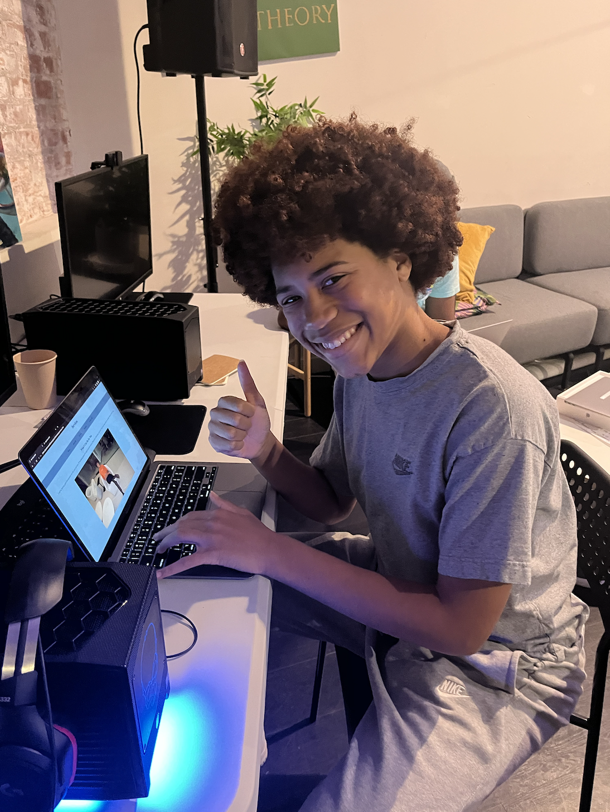

I am Jayden Russell, a 14 year old who aspires to work in game development. I'm from Lancaster, California, and have always liked the desert. I have always wanted to make games on Roblox and have admired developers like Epic Games, Sony, and etc. I am an avid anime fan, my favorite being Dragon Ball Z, and I like to cook. Given proper direction, I can cook anything you throw at me! I can play both the guitar and the trombone (to an extent), and have the ability to play anything that I hear. I really love gaming as a whole, and my favorite all time stuff is going to be listed below in the form of Top 5s. If I were to summarize myself, I would say that I'm pretty laid back, and match people's energy to the best of my ability.
1. Dragon Ball Z
2. One Piece
3. Naruto
4. One Punch Man
5. Hunter X Hunter
1. Roblox
2. GTA 5
3. Mortal Kombat
4. Minecraft
5. Fortnite
